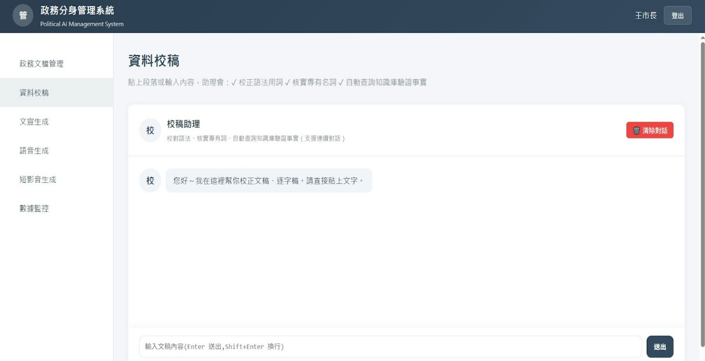
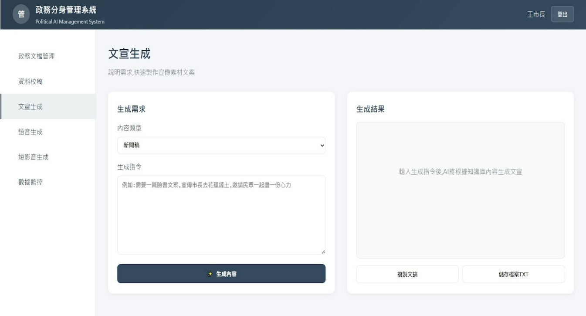
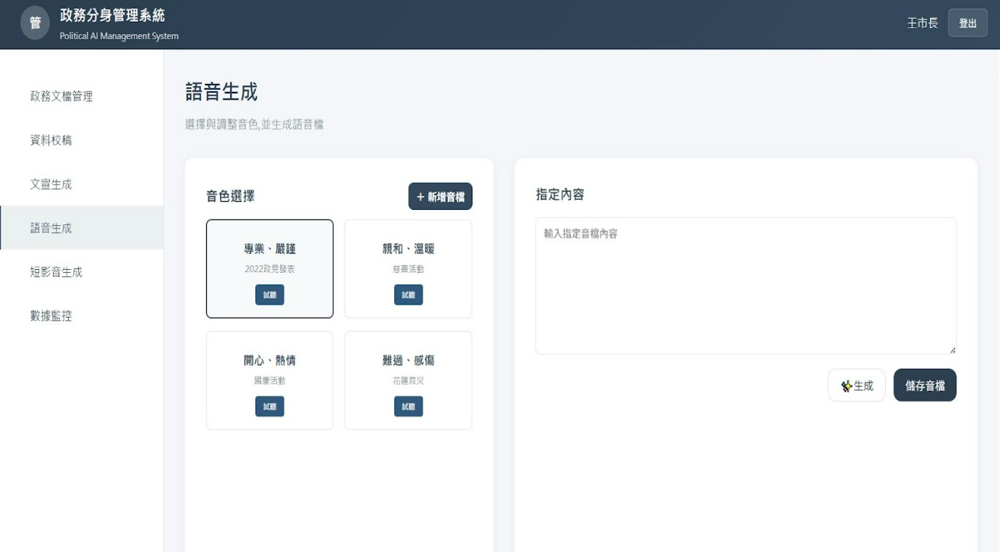
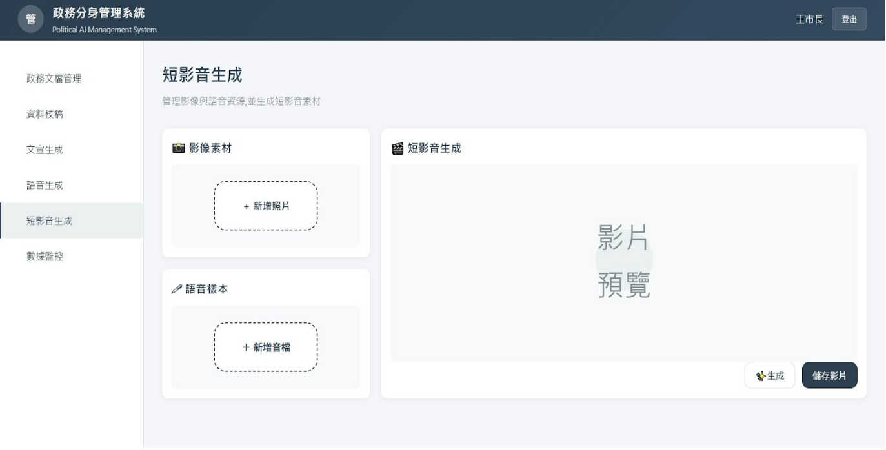
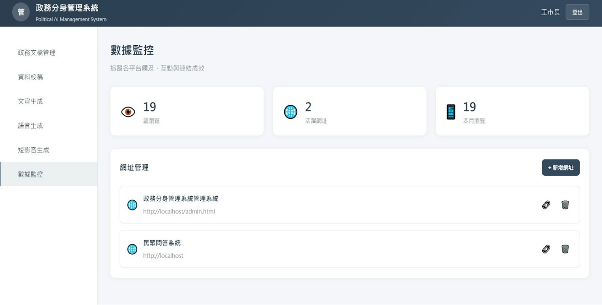
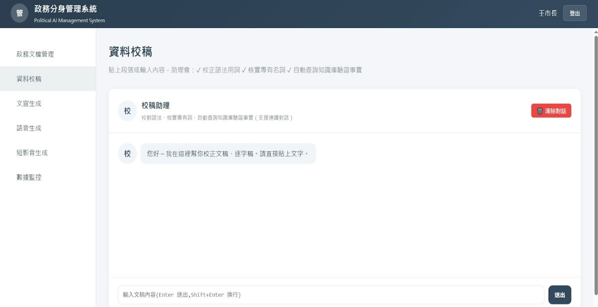
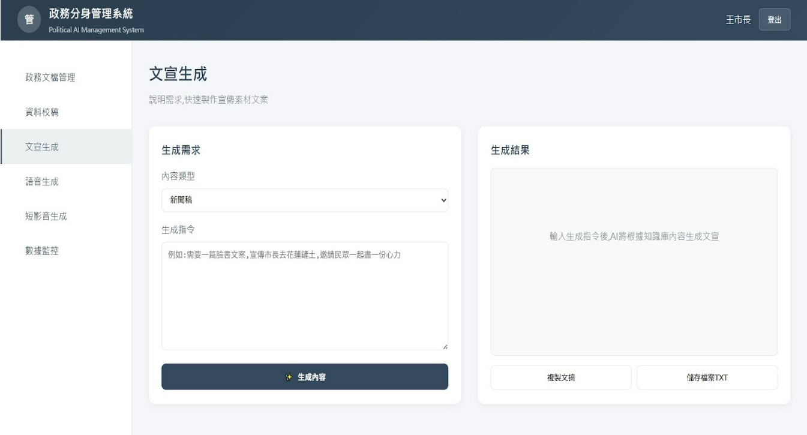
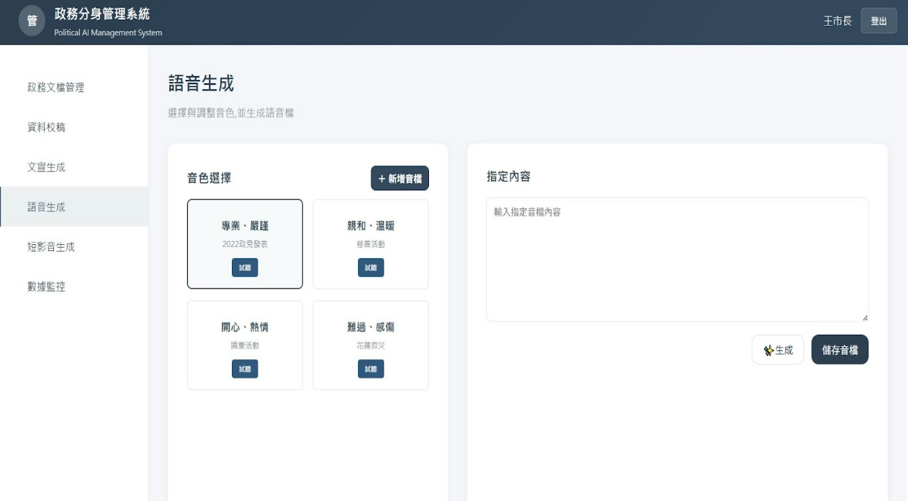
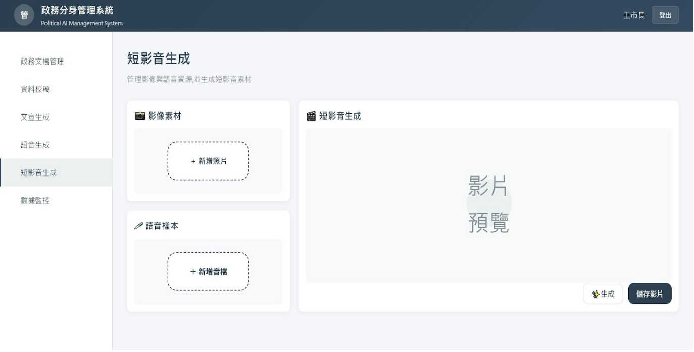
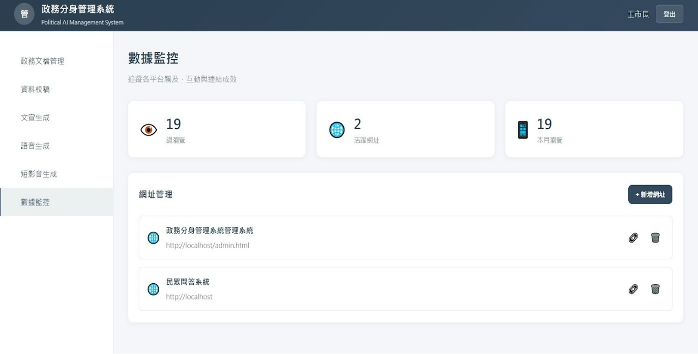

政務分身管理系統
整合知識庫管理、資料校稿、文宣生成、語音合成與短影音製作的一站式專業溝通平台
系統目標
提供簡潔、高效的知識庫管理與內容創作工具，讓專業人士能夠輕鬆管理知識庫、實現文宣生成、語音合成與影音推廣。
目標用戶
政治人物幕僚團隊、專業講師助理、企業公關人員等需要管理知識庫與產出專業內容的工作者。
核心價值
一站式整合、提升行政效率、確保內容一致性、降低人力成本、快速產出高品質內容。
核心功能
政務文檔管理
建立中央化知識庫，集中收集、分類和儲存所有相關文檔。支援隨時上傳最新檔案，包含個人資料、學經歷、政績報告或演講稿。同時支援刪除過時或不實資訊，確保資訊的準確性。
資料校稿
運用既有的專業資料庫和客戶語言風格模型，對影音逐字稿進行智能識別和自動修正。重點修正專業術語和行話錯誤，幕僚團隊進行最終審閱確認，確保資料的絕對準確性。
文宣生成
選擇文稿類型（如新聞發言稿、活動致詞、短影音文稿、FB文案等），輸入需求指令，AI 根據知識庫與客戶語言風格迅速生成文稿。支援即時預覽、修改與下載。
語音生成
提供多種情緒音色選擇，採集政務人員過去的音檔做音色模型。可將文宣生成的內容或自由輸入文字，透過語音克隆技術生成高品質語音檔案。
短影音生成
上傳照片素材作為影片主體形象，選擇語音樣本作為影片旁白，系統快速生成 AI 短影音。支援預覽與下載，適用於社群宣傳與政策推廣。
數據監控
整合施政計畫與成果資訊網的訪客點擊數，以及民眾智能問政系統的使用統計。讓幕僚快速掌握政策資訊的曝光度與民眾互動熱度，作為決策依據。
系統特色
一站式整合
從知識庫管理、文稿生成、語音合成到影音製作，所有功能整合在單一平台，無需在不同工具間切換。
風格一致性
AI 學習客戶的專業知識與語言風格，確保所有產出內容都能保持一致的語氣與專業度。
快速產出
大幅縮短文稿撰寫、語音錄製與影音製作的時間，從數天縮短至數分鐘。
動態維護
知識庫支援隨時新增、修改與刪除資料，確保系統始終使用最新、最準確的資訊。
精準校稿
AI 自動識別並修正專業術語，減少人工校對時間，提升逐字稿的準確度。
數據驅動
透過數據監控功能，了解民眾關注焦點，優化政策宣導與內容策略。
使用流程
1. 登入系統
使用專屬帳號登入政務分身管理系統，進入清晰的導覽介面。
2. 管理知識庫
上傳最新文檔、演講稿、政績報告等資料，或刪除過時資訊。
3. 校稿修正
上傳影音逐字稿，AI 自動修正專業術語，人工確認後更新知識庫。
4. 生成文宣
選擇文稿類型，輸入需求，AI 根據知識庫與風格模型生成內容。
5. 合成語音
選擇音色，輸入或貼上文字內容，生成高品質語音檔案。
6. 製作影音
上傳照片與語音，快速生成 AI 短影音，預覽後下載使用。
流程架構圖
 








